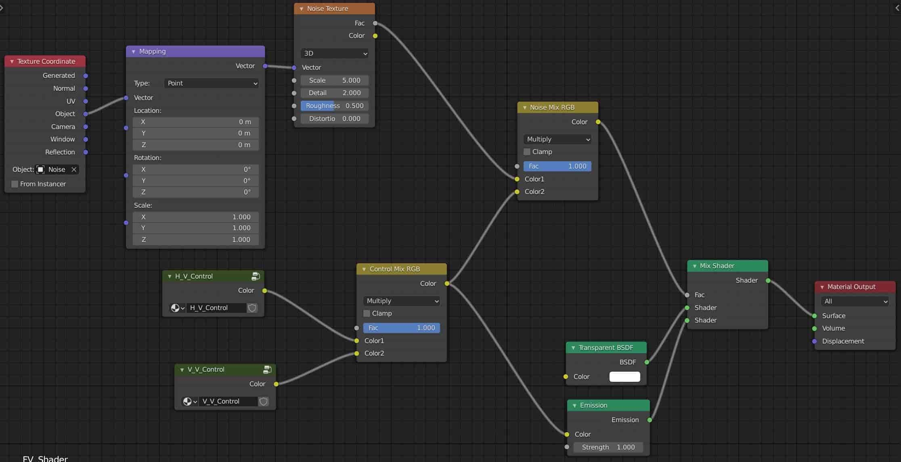

note_other
书籍以外的各种笔记
Blender Node
Themes
改变节点连接线的曲度
- Edit -Preferences-Themes-Node Editor-Noodle Curving
- 默认为0(直线), 增加节点即增加曲度
Animation Node
下载安装插件 Animation Node
- **半透明节点表示 输入/输出 为list
快捷键
-
调出node input output面板: u
-
自动连接两个node: 选中要连接的node, f
-
右侧菜单: n
-
左侧菜单: t
-
节点打组: ctrl/cmd+g
-
进入/退出组编辑: tab
-
debug: 在output添加
viewer节点 -
切断连线: ctrl/cmd+right click
-
组织nodes: 添加
frame节点 -
添加连线中点(把一对多的节点打结): shift+right click

技巧
-
节点打组后, 把需要调整的参数连接到
group input可以在组外调整 -
记住初始transforms
- 右侧菜单 - AN -
initial transforms - from current transforms - 在
animation nodes中添加object id key, 选择object, 选择initial transforms
- 右侧菜单 - AN -
-
创建实例并应用modifier
object instancer- 勾选
copy full object
-
创建矩阵
- 创建实例
object instancer matrix - distribute matrice- 查看矩阵分布形态, 添加
3d viewer
- 查看矩阵分布形态, 添加
- 添加
get list length得到 matrices的数量 - 把length连接到
object instancer上
.jpg)
-
添加
offset vector和random falloff添加random.jpg)
- 创建实例
Shader Node
fake volumetirc light 假体积光
- 创建一个平面, 命名为 EV
- 创建一个空坐标对象, 命名为 G1_Control, 用于调节灯光照射距离
- 创建另一个空球形对象, 命名为 G2_Control, 用于调研灯光直径
- 在EV中添加节点
emissionGradient TextureColorRamp - 在
Gradient Texture上 Ctrl+t 添加 Mapping 和 Texture Coordinate(需要提前安装 Node Wrangler 插件 ) - 把 Texture Coordinate, Mapping, Gradient Texture, ColorRamp打组(cmd+g), 命名为 H_V_Control
- 进入H_V_Control, 把
Texture Coordinate和Mapping的连接改为使用Object, Object 选择G1_control - ColorRamp 类型选为 B-Spine
- 进入H_V_Control, 把
- 复制一个H_V_Control, 重命名为 V_V_Control
- 进入V_V_Control, Object 选择G2_control
- Gradient Texture 选择Vector
- ColorRamp 按辐射的方式调整(中间纯白, 两边纯黑)
- 把H_V_Control和V_V_Control用Mix RGB连接, 命名为 Control Mix RGB
- Control Mix RGB 连接到Emission
- 添加一个Transparent BSDF和一个Mix Shader
- 把Transparent BSDF和Emission连接到Mix Shader
- 把G1_control和G2_control作为FV的子对象
- 添加Noise Texture, ctrl+t添加Mapping和Texture Coordinate
- 添加一个空立方体对象, 命名为Noise Control, 添加到Noise的 Texture Object里, 控制Noise的移动
- 复制一个Mix RGB, 把Noise Texture和Control Mix RGB连上去, 输出连接到Mix Shader的Fac里
- 设置摄像机
- 因为FV是2D的, 光也是2D, 需要让2D的面一直面向摄像机伪装成3D, 在EV的Object Constraint Properties里添加
Locked Track, Target选择Camera, Track Axis 选择-Z, Locked Axis选择Y - 设置Noise动画
- 选择Noise Control, Location Z添加key
- 20帧, Z移动到30m, 再点击key
- 切换时间轴到Graph editor: ctrl+tab
- 选择Z Location, 全选所有帧, 按 t 选择平滑度为线性
- 添加Modifiers-Cycles, After选择Repeat with Offset

Emission
- 在Emission前添加 Blackbody 可以调色温
- 要打开 Render Properties 里的 Bloom, 发光才会在渲染模式下可见
Background
在World Properties里添加节点
Texture Node
快捷键
-
预览: ctrl+shift+鼠标左键
-
Texture Setup: ctrl+t
基础知识
- 置换贴图 Displacement Texture 凹凸贴图 bump Texture 法线贴图 Normal Texture
- 置换贴图: 是通过批量修改顶点位置的方式实现物体表面真实的凹凸感, 会使用大量的内存渲染(最好不用…)
- 原物体细分必须足够多, 不然效果出不来
- 在node中添加displacement节点后, 还需要在物体上应用displacement修改器,效果才能出来
- 凹凸贴图: 是用一张黑白图做为高度模拟, 黑不变白凸起, 不会实质性影响物体表面的点面数, 改变光照角度时凹凸不会改变
- 法线贴图: 用于在低精模上表现高精模的纹理, 使用高精模bake
- 每个纹理像素的RGB值表示方向矢量的X Y Z值, 从而影响平面计算光照的方式
- 置换贴图: 是通过批量修改顶点位置的方式实现物体表面真实的凹凸感, 会使用大量的内存渲染(最好不用…)
法线贴图最简步骤
制作一个简单的法线贴图的步骤:
- 在最终要体现法线贴图的物体添加材质, 新建一个img Texture并选中
- 打开 UV 编辑器
- 选中物体, 把渲染模式改为 Cycles ,模式选择Normal, Bake
- 可以在UV编辑器里看到结果
- 把Texture连接到Normal节点
- 在渲染模式下添加太阳光, 调整角度查看结果
蒙皮贴图要点
以 Brick 贴图为例:
- 修正贴图只有一面正常的情况:
- 给贴图添加
Texture CoordinateUV连接到贴图的Vector
- 给贴图添加
- 修正贴图过大的情况:
- 方法一: 进入编辑模式, U 调出UV菜单 选择
Cube Projection(根据蒙皮物体的形状) - 方法二: 在贴图前面加上Texture Coolrdinate + mapping , 调整 Mapping scale
- 方法一: 进入编辑模式, U 调出UV菜单 选择
- 添加Noise贴图后修正原表面颜色
- 在Noise贴图和Brick贴图间加上ColorRamp
- 使用置换添加凹凸感